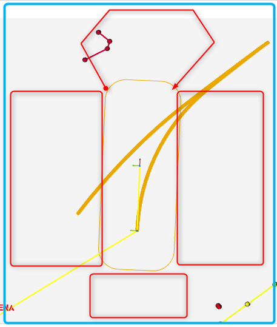
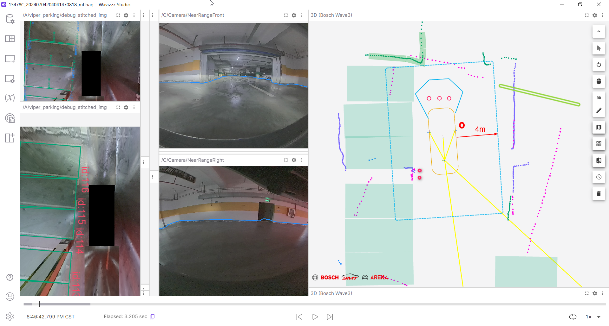

USS residue and misunderstanding filtering
Solution:
uss fov-based prune
Only keep nodes in the USS FOV and remove the USS Tracking Node.Reduce the projection deviation caused by the long -term operation of USS.
LI Cheng
node level processing
remove out-of-view node
4 fov ROI or 1 fov-ROI ?
- 
Set the call switch, Parameter Instance in CF
risk:
After the USS performs FOV-BASED PRUNE, there will be no USS NODES if it is blocked/distant obstacle. At this time, these outlines do not have USS and VIPER observations, and CF Contour attenuation will become faster.
viper-fs based filter
After the USS cluster
voxel based association
removing uss node which is not matched with viper-fs & uss-object
Mainly delete and misunderstand; deceleration bands, ground locks, ceiling pipes, rolling door
solution
VIPER-FS multi-frame label Mask and USS Object label Mask.Mask Region's USS retains, other USS delete.
Single -frame USS misunderstandings will not enter the FUSION
VIPER-FS delay 5 frames (multi-frame Mask), and the USS Point in the neighboring domain 20cm is directly retained; otherwise, enter the second round of verification.
Viper-Fs is centered on EGO VOXEL on a VOX; regardless of Ego Voxel, it is expanded with 2 Voxel (20cm).
Check test 2: If the pre -deleted USS Point is in the Traversable area, delete it directly.Otherwise, use USS Object to check, and retain in the USS Object Roi Bbox, otherwise delete it
USS Object Roi Bbox: USS Object does not expand in the direction of the line (length).In the direction of the law line, expand 20cm each.
The USS in the structured Pillar, Vehicle, and CURB neighboring domain will be deleted without a general voxful.
Dynamic residue
The USS Node residue of the exercise target may also have a corresponding USS Object residue; it cannot be filtered by USS Object
Df bbox trajectory mask ===> In principle, this area is a passable area
BEV-fs semantics
Communication information before synchronization with Michael
Visual Debonce 5 frame, use Viper-FS multi-frame observation to check, VIPER-FS multi-frame leakage probability is low
Risk: The texture of the texture is sparse area, and the VIPER-FS omissions can cause USS to delete it by mistake, and there is a collision risk.
- 
USS Unknown Node is considered Low Node
The current unknown node is regarded as high node
uss reset
Reset does not affect the USS PP function; PP function is in another link?
Reset cycle?
Do a test and communicate with Freyo